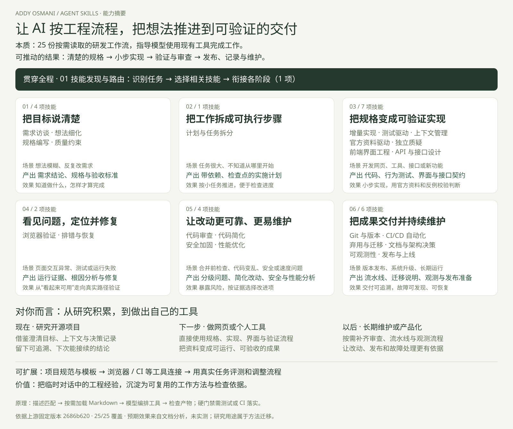

把方法变成执行上下文
任务描述匹配相关技能，按需加载 Markdown 指令，再由模型调用代码、浏览器或测试工具完成工作。9 个命令与 4 类角色辅助组织流程；模型判断、工具权限和项目条件共同影响结果。
可推动更完整的工程过程。强制质量标准仍需测试和 CI 执行；技能文本本身不等于质量保证。
Agent Skills 是 Addy Osmani 整理的软件研发流程技能库。它把澄清需求、规划、实现、验证、审查和发布方法写成 25 份工作流，指导大模型使用现有工具，产出规格、代码、测试、问题报告和发布准备材料。

任务描述匹配相关技能，按需加载 Markdown 指令，再由模型调用代码、浏览器或测试工具完成工作。9 个命令与 4 类角色辅助组织流程；模型判断、工具权限和项目条件共同影响结果。
可推动更完整的工程过程。强制质量标准仍需测试和 CI 执行；技能文本本身不等于质量保证。
研究阶段：借鉴访谈、上下文与决策记录，明确研究问题、保存来源和结论。做工具时：把需求变成规格，逐步开发网页并验证交互。长期维护时：用审查、排错、发布与观测流程管理变更。
对你的意义是减少重复解释与遗漏检查，让研究积累能延续到实际成果。通用研究场景属于方法迁移。
内容层：补充自己的项目规范、技术栈与验收模板。工具层：接入浏览器、测试、CI 和观测系统。验证层：用真实任务比较质量、成本与失败情况，再调整流程。
这些是扩展建议；本研究尚未实施工具集成，也未验证效率提升幅度。
试试更简短的关键词，或清除阶段与搜索条件。
看清每项能力接收什么、负责哪一段，以及把什么交给下一步。
结合当前的开源项目研究与资料沉淀，区分现在能借鉴的方法和未来开发时的直接能力。
整理已有背景，保存来源和判断理由，明确仍未验证的部分。你得到的是可追溯、可继续的研究积累。
这是工程方法向研究工作的迁移；原技能并不自带完整的通用研究流程。明确真正目标，比较值得投入的方向，再把确定的工作拆成可检查的任务。
定义功能与验收，以可运行的小步骤完成界面，再验证真实交互和错误状态。
定位缺陷、审查代码、观察运行情况，并在每次发布前准备验证与恢复措施。